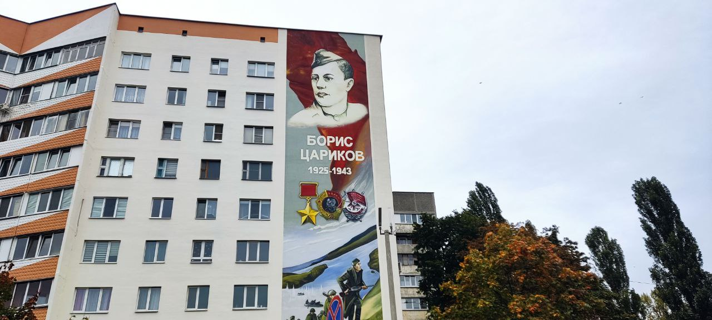

×

Мурал — гэта не проста вялікая выява, намаляваная на сцяне, гэта арыгінальны спосаб аддаць даніну памяці абаронцам Радзімы, вялікім героям Чырвонай арміі, якія падчас Вялікай Айчыннай вайны вызвалілі нашу краіну. У самім Гомелі налічваецца больш за 10 муралаў, прысвечаных героям Вялікай Айчыннай вайны і значным асобам.
| Фота месца | Адрас | Апісанне |
|---|---|---|
 |
Выява Емяльяна Барыкіна на вул. Барыкіна, 94, г. Гомель | Напярэдадні 75-й гадавіны Перамогі ў Вялікай Айчыннай на доме № 94 па вуліцы Барыкіна быў створаны мурал з выявай Емяльяна Ігнатавіча. |
 |
Выява Канстанціна Ракасоўскага на вул. Ільіча, 106, г. Гомель | У Гомелі з'явіўся 30 – метровы мурал Канстанціна Ракасоўскага-легендарнага палкаводца, двойчы Героя Савецкага Саюза. |
 |
Выява Мікалая Зебніцкага на вул. Савецкай, 145, г. Гомель | Напярэдадні 80-годдзя вызвалення Гомеля ад нямецка-фашысцкіх захопнікаў быў адкрыты мурал у гонар Героя Савецкага Саюза Мікалая Васільевіча Зебніцкага. |
 |
Выява Івана Фядзюнінскага на вул. Савецкай, 157/2, г. Гомель | Напярэдадні 80-годдзя вызвалення Гомеля ад нямецка-фашысцкіх захопнікаў у горадзе з'явіўся новы мурал у гонар генерала арміі Героя Савецкага Саюза ганаровага грамадзяніна Гомеля Івана Іванавіча Фядзюнінскага. |
 |
Выява Кірыла Мазурава на вул. Мазурава, 4к / 2, г. Гомель | Да 800 годдзя горада тарцы двух дамоў на вуліцы Мазурава ўпрыгожыла чарговае графіці з выявай знакавай для Гомеля асобы. Мурал прысвечаны савецкаму партыйнаму дзеячу Кірылу Мазураву. |
| Выява Ілля Кожара на вул. Кожара, 2, г. Гомель | У жніўні спаўняецца 120 гадоў з дня нараджэння Іллі Кожара, а ў сакавіку 105 гадоў адзначыла газета гомельская праўда. Таму заканамерна, што менавіта па ініцыятыве рэдакцыі абласной газеты, якая таксама выступіла мецэнатам праекта, фасад дома па вуліцы, названай у гонар Героя, упрыгожыў мурал нашаму вядомаму земляку. | |
 |
Выява Цімафея Барадзіна на вул. т. с. Барадзіна, 10А, г. Гомель | Новы мурал з'явіўся на адным з дамоў у Гомелі. Прысвечаны Ён Герою Савецкага Саюза Цімафею Барадзіну. Графіці з выявай вядомага гомельскага падпольшчыка знаходзіцца на новабудоўлі, якая вырасла на аднайменнай вуліцы ў мікрараёне «Мельнікаў Луг». |
 |
Выява Паўла Галавачова на вул. Галавачова, 2, г. Гомель | Да Дня Ваенна-паветраныя сіл на фасадзе аднаго з будынкаў адкрылі новы мурал вялікаму лётчыку Савецкага Саюза Паўлу Галавачаву. |
|  | Выява Барыса Царыкава на вул. Царыкава, 3, г. Гомель | Да Дня Незалежнасці Рэспублікі Беларусь У Гомелі з'явіўся новы мурал прысвечаны піянеру-герою Савецкага Саюза Барысу Царыкаву. |
| Выява Галіна Дакутовіч на вул. Чырвонай, 1, г. Гомель | Да Дня Незалежнасці Рэспублікі Беларусь У Гомелі з'явіцца новы мурал прысвечаны легендарнай лётчыцы Савецкага Саюза, ураджэнцы г. Гомеля, галіне Дакутовіч. | |
 |
Малюнак Івана Зайцава на вул. Кастрычніцкая, 7, п. Чонкі | У пасёлку пад Гомелем з'явіўся мурал у гонар Героя Савецкага Саюза Івана Зайцава ў доме на той вуліцы, дзе ён нарадзіўся. |
| Выява Андрэя Корзуна на вул. Корзуна, 45, г. Нароўля | У Нароўлі з'явіўся мурал, прысвечаны герою Вялікай Айчыннай вайны, ураджэнцу Нараўляншчыны, Андрэю Корзуну. | |
 |
Выява Аляксандра Гарбатава па пр-ту Касманаўтаў, 32, г. Гомель | Напярэдадні святкавання 81-й гадавіны вызвалення Гомеля ад нямецка-фашысцкіх захопнікаў паступіла прапанова аб стварэнні мурала ў гонар Героя Савецкага Саюза Аляксандра Гарбатава. |
 |
Выява Фёдара Паўлоўскага па в=ул. Бумажкова, 6, п.г.т. Октябрьский | У пасёлку гарадскога тыпу Акцябрскі з'явіўся новы мурал, прысвечаны ўраджэнцу пасёлка, Фёдару Паўлоўскаму. |
| Выява Ціхана Бумажкова па вул. Бумажкова, 4, п.г.т. Октябрьский | У пасёлку гарадскога тыпу Акцябрскі з'явіўся новы мурал, прысвечаны ўраджэнцу пасёлка, Ціхану Бумажкову. | |
 |
Выява Васіля Казлова на вул.Казлова, 6, г. Жлобін | У горадзе Жлобіне напярэдадні святкавання 80-й гадавіны вызвалення Беларусі ад нямецка-фашысцкіх захопнікаў з'явіўся новы мурал, прысвечаны Васіллю Казлову. |
| Выява Леаніда Пятроўскага на вул. ул. Петровскага, 31, г. Жлобін | Напярэдадні святкавання 80-й гадавіны асобніцтва Беларусі ад нямецка-фашысцкіх захопнікаў, у Жлобіне адкрылі новы ў гонар Леані Пятроўскага. | |
| Выява Мікалая Міхайлашава на вул. Савецкая 2, г. Добруш | Напярэдадні святкавання 80-й гадавіны асобніцтва Беларусі ад нямецка-фашысцкіх захопнікаў, у Жлобіне адкрылі новы ў гонар Леані Пятроўскага.. | |
 |
Выява Георгія Жукава на вул. Жукава, 2, г. Гомель | Напярэдадні святкавання 80-годдзя Перамогі паступіла прапанова аб стварэнні мурала ў гонар Героя Савецкага Саюза Георгія Жукава. |
| Выява Рыгора Дзенісенка на вул. Рыгора Дзенісенка, 82, г. Гомель | У горадзе Гомелі нядаўна быў адкрыты мурал легендарнаму герою Рыгору Дзенісенка, напярэдадні святкавання 80-й гадавіны Перамогі. | |
| Малюнак Іллі Катуніна на вул. Катуніна, 2, г. Гомель | Напярэдадні святкавання 80-годдзя Перамогі паступіла прапанова аб стварэнні мурала ў гонар Героя Савецкага Саюза Ільі Катуніна. |